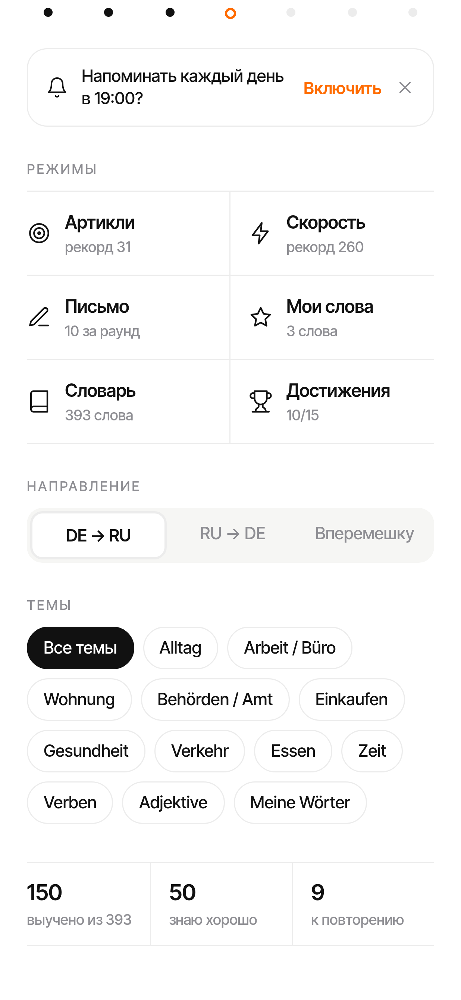

Тренировки смешаны со Словарём и Достижениями, видно только после скролла.
Крупные карточки-плитки в нижней половине, «рекомендуемая» сверху. Словарь (+ Мои слова) — свой таб; Достижения — в Профиль.